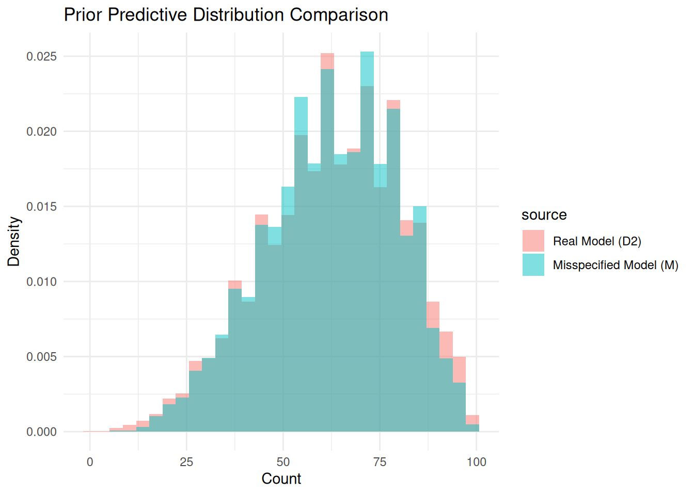

n_obs = 100
y = r_beta_bernoulli(n_obs, alpha = 3, 4)
y_obs = sum(y)
y_obs[1] 42In data analysis, models are never exactly correct. Simplifying assumptions, such as independence, homogeneity, or a specific distributional form, keep models tractable. While Bayesian methods are often viewed as robust because they incorporate uncertainty explicitly, they are still sensitive to model misspecification: where assumed model structure does not match the true data-generating process.
This project investigates how small, realistic forms of model misspecification can materially change Bayesian conclusions, even when prior assumptions appear reasonable. Rather than focusing on parameter estimates alone, we compare posterior predictive distributions, which directly reflects what the model believes future or unseen data will look like. This makes the analysis especially relevant for applied settings where Bayesian models are used to support forecasting, decision-making, or risk assessment.
To isolate the effect of misspecification, we construct pairs of models where:
By matching prior predictive distributions, any divergence observed after seeing data can be attributed primarily to differences in model structure rather than differences in prior assumptions. We quantify these differences using total variation distance and visualize how predictive beliefs diverge after updating on the same observations.
Two scenarios are examined:
Across both cases, we find that seemingly mild misspecification can lead to substantially different posterior predictions. The results highlight an important lesson for applied Bayesian modeling: a model that appears well-calibrated before seeing data may still produce misleading inferences if its structural assumptions are wrong.
Our data \(y\) follows the following hierarchical distribution, which we’ll denote \(D_1\).
\[ \begin{align} Y &\sim Binom(100, p) \\ p &\sim Beta(3, 4) \end{align} \]
n_obs = 100
y = r_beta_bernoulli(n_obs, alpha = 3, 4)
y_obs = sum(y)
y_obs[1] 42Now, we will misspecify the model.
We now assume the data comes from a binomial distribution, and assign a beta(5,3) prior on the proportion, where Y is the sum of the data, We’ll call this model \(M\) (for “Misspecified”). \[ \begin{aligned} Y &\sim \text{Binom}(n = 100, p) \\ (Prior)\quad p &\sim \text{Beta}(5, 3) \end{aligned} \]
Prior Predictive distribution:
pp_sample_size = 10000
# the predictive distribution follows a beta-binomial
prior_pred_M = r_beta_binom(pp_sample_size, n_obs, 5, 3)Now to find an equivalent prior for the real model
The real model (\(D_1\)): \[ \begin{aligned} Y &\sim \text{Binom}(n=100, p) \\ p &\sim \text{Beta}(\alpha, \beta) \\ (Prior)\quad \alpha &\sim \log \mathcal{N}(\mu_1, \sigma_1) \\ (Prior)\quad \beta &\sim \log \mathcal{N}(\mu_2, \sigma_2) \end{aligned} \]
A function to sample from the prior predictive distribution:
# function for sampling from prior predictive distrib of D2 model
sample_from_pp_D1 = function(n, size, mu1, sigma1, mu2, sigma2) {
alphas = rlnorm(n, mu1, sigma1)
betas = rlnorm(n, mu2, sigma2)
probs = rbeta(n, alphas, betas)
sample = rbinom(n, size, probs)
return(sample)
}We will use lognormal \(\log \mathcal{N}(\log 5,\ 0.01)\) and \(\log \mathcal{N}(\log 3,\ 0.01)\) as the priors for \(\alpha\) and \(\beta\) in model \(D_1\), chosen to create a very similar prior predictive distribution to the prior for \(M\).
These are the prior predictive distributions compared:
prior_pred_D1 = sample_from_pp_D1(n = pp_sample_size,
size = n_obs,
mu1 = log(5), sigma1 = 0.01,
mu2 = log(3), sigma2 = 0.01)
tvd_prior = pp_sample_distance(prior_pred_D1, prior_pred_M)
tvd_prior[1] 0.0447plot_pp_difference(real_sample = prior_pred_D1, real_model_name = "D1",
miss_sample = prior_pred_M, miss_model_name = "M",
prior_or_post = "Prior")
As you can see, the predictive distributions for the two models are extremely similar, which suggests the two priors are effectively equivalent.
This implies that any differences observed in the posterior distributions after updating on data are likely attributable to differences in the models themselves, rather than the priors.
Now let’s find the posteriors of each and see how they vary.
Finding posterior via naive simulation
# We sample from the prior a lot, predict with the param values from the prior,
# and keep if the prediction is equal to the observed data
df = data.frame(alpha = numeric(), beta = numeric())
i = 1
while (i <= pp_sample_size) {
alpha = rlnorm(1, log(5), 0.01)
beta = rlnorm(1, log(3), 0.01)
y_pred = r_beta_binom(1, n_obs, alpha, beta)
if (y_pred == y_obs) {
df = rbind(df, data.frame(alpha=alpha, beta=beta))
i = i+1
}
}
df <- mutate(df, post_pred = r_beta_binom(n(), n_obs, alpha, beta))This is a straightforward application of the Beta-Binomial Prior.
\[ Y \sim Binom(100, p), \quad p \sim Beta(5, 3) \]
so \[ p \mid Y = 42 \sim Beta\!\big(5+42,\ 3+58\big) \]
post_predictive_M = r_beta_binom(pp_sample_size, n_obs, 5+y_obs, 3+n_obs-y_obs)tvd_post = pp_sample_distance(df$post_pred, post_predictive_M)
plot_pp_difference(real_sample = df$post_pred, real_model_name = "D1",
miss_sample = post_predictive_M, miss_model_name = "M",
prior_or_post = "Posterior")
The posterior predictive distributions are quite different, with a Total Variational Distance of 0.648 (a 14.4966443 time increase from the prior TVD), so the model misspecification in this case seems to have a significant impact on results.
Now, we explore what happens if our sample comes from a dependent model. Specifically, we generate a sample from summing a Markov Chain of \(n\) drifting Bernoulli trials, denoted as model \(D_2\).
\[ Y \sim MC(n=100, \ p_0=0.4, \ \delta=0.1) \] (MC for Markov Counts, details for sampling are in the helper functions section)
Where for \(n\) trials, \(p_0\) is the initial probability of success, and \(\delta\) is the standard deviation of gaussian drift added to the success probability after each trial.
n_ops = 100
y = r_markov_bernoulli(n_ops, p0=0.4, drift_sd=0.1)
y_obs = sum(y)
y_obs[1] 34Again, we will misspecify the model by assuming the data comes from a binomial distribution. We assign the same \(\text{Beta}(5, 3)\) prior on \(p\). Again, we call this model \(M\). \[ \begin{aligned} Y &\sim \text{Binom}(n=100, p) \\ (Prior)\quad p &\sim \text{Beta}(5, 3) \end{aligned} \]
Let’s then find an equivalent prior for model \(D_2\). \[ \begin{aligned} Y &\sim MC(n=100, p_0, \delta) \\ (Prior)\quad p_0 &\sim \text{Beta}(\alpha, \beta) \\ (Prior)\quad \delta &\sim \text{Exp}(\lambda) \end{aligned} \] We’ll need a function to sample a prior predictive distribution for \(D_2\).
sample_from_pp_D2 = function(n, size, alpha, beta, rate) {
p0 = rbeta(n, alpha, beta)
drift_sd = rexp(n, rate)
sample = r_markov_counts(n, size, p0, drift_sd)
return(sample)
}Let’s use this prior distribution: \[ \begin{aligned} Y &\sim MC(n=100, \ p_0, \ \delta) \\ (Prior)\quad p_0 &\sim \text{Beta}(5, 3) \\ (Prior)\quad \delta &\sim \text{Exp}(100) \end{aligned} \]
And compare the prior predictive distributions:
prior_pred_D2 = sample_from_pp_D2(n=pp_sample_size,
size = n_obs,
alpha=5, beta=3, rate=100)
tvd_prior = pp_sample_distance(prior_pred_D2, prior_pred_M)
tvd_prior[1] 0.0601plot_pp_difference(real_sample = prior_pred_D2, real_model_name="D2",
miss_sample = prior_pred_M, miss_model_name="M",
prior_or_post = "Prior")
As shown, the priors are effectively equivalent.
Let’s proceed with updating both models to see what kind of discrepancy there is.
We use naive simulation again to create a posterior sample for D2. (This one is much slower, so we’re also accepting if the predicted is within 1 of the observed, which makes the posterior a bit less accurate.)
df = data.frame(p0 = numeric(), drift_sd = numeric())
i = 1
while (i <= pp_sample_size) {
p0 = rbeta(1, 5, 3)
drift_sd = rexp(1, 100)
y_pred = r_markov_counts(1, n_obs, p0, drift_sd)
if (abs(y_pred - y_obs) <= 1) {
df = rbind(df, data.frame(p0=p0, drift_sd=drift_sd))
i = i+1
}
}
df <- mutate(df, post_pred = r_markov_counts(n(), n_obs, p0, drift_sd))Again, a straightforward updating of the Beta-Binomial Prior.
post_predictive_M = r_beta_binom(pp_sample_size, n_obs, 5+y_obs, 3+n_obs-y_obs)tvd_post = pp_sample_distance(df$post_pred, post_predictive_M, method = 'tvd')
plot_pp_difference(real_sample = df$post_pred, real_model_name = "D2",
miss_sample = post_predictive_M, miss_model_name = "M",
prior_or_post = "Posterior")
There is a Total Variational Distance of 0.214 (a 3.5607321 time increase from the prior TVD), and we can see from the plot, the posterior predictive distributions are visibly different.
These examples demonstrate that model misspecification can have significant impacts of the results of a bayesian analyses. In terms of real world implications, these examples can serve as a cautionary tale to not blindly trust a model, even one with a reasonable prior predictive distribution.
An end goal of this project would be to analyze which statistics and tests are robust to varying degrees of model misspecification. To do this, we anticipate we’ll need to figure out the following:
Functions are sourced at the top so they stay out of the way while reading. Full helper code is shown here for reference.
r_beta_bernoulli = function(n, alpha, beta) {
probs = rbeta(n, alpha, beta)
sample = rbinom(n, 1, probs)
return(sample)
}
r_beta_binom = function(n, size, alpha, beta) {
probs = rbeta(n, alpha, beta)
sample = rbinom(n, size, probs)
return(sample)
}
r_markov_bernoulli = function(n, p0, drift_sd) {
probs = numeric(n)
probs[1] = p0
for (i in 2:n) {
probs[i] = probs[i - 1] + rnorm(1, 0, drift_sd)
probs[i] = min(max(probs[i], 0), 1)
}
sample = rbinom(n, 1, probs)
return(sample)
}
r_markov_counts = function(n, size, p0, drift_sd) {
sample = numeric(n)
for (i in 1:n) {
sample[i] = sum(r_markov_bernoulli(size, p0[i], drift_sd[i]))
}
return(sample)
}
pp_sample_distance = function(pp_sample1, pp_sample2, method = "tvd") {
if (length(pp_sample1) != length(pp_sample2)) {
print("warning: sample sizes are different")
}
if (method == "tvd") {
max_val = max(c(pp_sample1, pp_sample2))
counts1 = tabulate(pp_sample1, nbins = max_val)
counts2 = tabulate(pp_sample2, nbins = max_val)
counts1 = counts1 / sum(counts1)
counts2 = counts2 / sum(counts2)
return(0.5 * sum(abs(counts1 - counts2)))
} else if (method == "binned_tvd") {
combined = c(pp_sample1, pp_sample2)
breaks = hist(combined, plot = FALSE)$breaks
counts1 = hist(pp_sample1, breaks = breaks, plot = FALSE)$counts
counts2 = hist(pp_sample2, breaks = breaks, plot = FALSE)$counts
counts1 = counts1 / sum(counts1)
counts2 = counts2 / sum(counts2)
return(0.5 * sum(abs(counts1 - counts2)))
} else {
print("available methods are 'tvd' and 'binned_tcd'")
}
}
plot_pp_difference = function(real_sample, miss_sample, prior_or_post, real_model_name, miss_model_name) {
plot_df = tibble(
D = real_sample,
M = miss_sample
) |>
pivot_longer(
cols = D:M,
names_to = "source",
values_to = "values"
)
ggplot(plot_df, aes(x = values, fill = source)) +
geom_histogram(aes(y = after_stat(density)), position = "identity", alpha = 0.5, bins = 30) +
labs(title = glue("{prior_or_post} Predictive Distribution Comparison"), x = "Count", y = "Density") +
scale_fill_discrete(
labels = c(glue("Real Model ({real_model_name})"), glue("Misspecified Model ({miss_model_name})"))) +
theme_minimal()
}
sample_from_pp_D1 = function(n, size, mu1, sigma1, mu2, sigma2) {
alphas = rlnorm(n, mu1, sigma1)
betas = rlnorm(n, mu2, sigma2)
probs = rbeta(n, alphas, betas)
sample = rbinom(n, size, probs)
return(sample)
}
sample_from_pp_D2 = function(n, size, alpha, beta, rate) {
p0 = rbeta(n, alpha, beta)
drift_sd = rexp(n, rate)
sample = r_markov_counts(n, size, p0, drift_sd)
return(sample)
}
r_markov_bernoulli_old = function(n, p_initial, p_after_1, p_after_0){
sample = numeric(n)
sample[1] = rbinom(1, 1, p_initial)
for (i in 2:n) {
if (sample[i - 1] == 1) {sample[i] = rbinom(1, 1, p_after_1)}
else {sample[i] = rbinom(1, 1, p_after_0)}
}
return(sample)
}
r_markov_counts_old = function(n, size, p_initial, p_after_1, p_after_0) {
sample = numeric(n)
for (i in 1:n) {
sample[i] = sum(r_markov_bernoulli_old(size, p_initial, p_after_1, p_after_0))
}
return(sample)
} We tried using grid search over parameterized priors to find priors with equivalent prior predictive distributions, but it did not work well at all.
# grid = expand.grid(
# mu1 = seq(1, 50, by=5),
# mu2 = seq(1, 50, by=5),
# sigma1 = seq(1, 50, by=5),
# sigma2 = seq(1, 50, by=5)
# )
# grid = grid |>
# mutate(
# pp_sample = pmap(
# list(mu1, sigma1, mu2, sigma2),
# ~ sample_from_pp_D1(n = pp_sample_size,
# size = n_obs,
# mu1 = ..1, sigma1 = ..2,
# mu2 = ..3, sigma2 = ..4))) |>
# mutate(
# distances = map(pp_sample, ~ pp_sample_distance(.x, prior_pred_M))
# ) |>
# arrange(distances)We tried to use a different kind of markov model originally, but could not find priors which made equivalent prior predictive distributions for it.
# (UNUSED because couldn't find equivalent predictive prior) function to sample Markov Bernoulli Distribution
r_markov_bernoulli_old = function(n, p_initial, p_after_1, p_after_0){
sample = numeric(n)
sample[1] = rbinom(1,1,p_initial)
for (i in 2:n) {
if (sample[i-1]==1) {sample[i] = rbinom(1,1, p_after_1)}
else {sample[i] = rbinom(1,1, p_after_0)}
}
return(sample)
}
# (UNUSED because couldn't find equivalent predictive prior) function to sample counts from 'size'-number of markov bernoulli trials
r_markov_counts_old = function(n, size, p_initial, p_after_1, p_after_0) {
sample = numeric(n)
for (i in 1:n){ # for each sample, do 'size' bernoulli trials, then sum
sample[i] = sum(r_markov_bernoulli(size, p_initial, p_after_1, p_after_0))
}
return(sample)
}